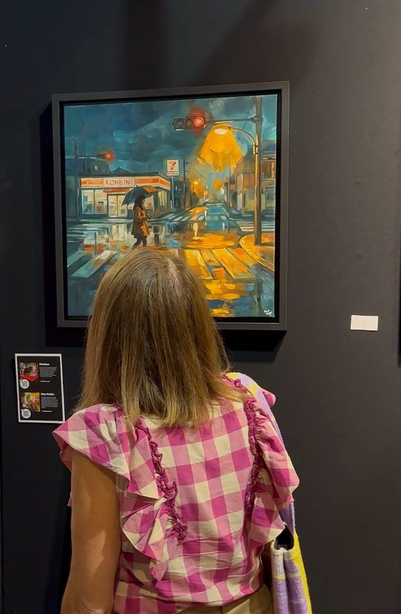

Konbini : la supérette japonaise qui ne ferme pas, et Le passage de la nuit
Par William San, le

Le dimanche 13 septembre 2026, à 15 h 47, au Chapiteau de Fontvieille, une visiteuse du salon art3f de Monaco s’est arrêtée devant une de mes toiles et n’a plus bougé. C’était Le passage de la nuit. La nuit, après la pluie, une femme sous un parapluie traverse un passage piéton, devant la vitrine encore allumée d’un konbini.
Un konbini, c’est la supérette japonaise ouverte jour et nuit. Le mot abrège l’anglais convenience store, prononcé à la japonaise. La nuit, sa vitrine reste allumée quand le reste de la rue s’éteint. C’est elle qu’on voit derrière la passante.
Une invention japonaise des années 1970
Le titre de premier konbini se dispute : un magasin d’essai, My Shop, ouvre dès 1969 à Toyonaka, près d’Osaka. La date la plus souvent citée reste le 15 mai 1974. Ce jour-là, le premier 7-Eleven du Japon ouvre à Toyosu, dans l’arrondissement de Kōtō, à Tokyo, dans un ancien magasin de spiritueux. Il ne fait pas encore la nuit. Comme son nom l’annonce, il ouvre de 7 h à 23 h. L’ouverture 24 heures sur 24 arrive un an plus tard, en juin 1975, à titre d’essai, dans un magasin de Kōriyama, dans la préfecture de Fukushima (nippon.com retrace ces dates).
Cinquante ans après, le modèle couvre le pays. À la fin de 2025, les sept grandes enseignes membres de la Japan Franchise Association comptaient 56 054 magasins, pour un chiffre d’affaires annuel de 12 058 milliards de yens, un record. Trois noms dominent les rues : 7-Eleven, FamilyMart et Lawson.
Ce qu’on trouve dans un konbini
On y vient d’abord pour manger. Les onigiri, ces boulettes de riz enveloppées d’une feuille d’algue, ont fait décoller les ventes à la fin des années 1970, quand un film plastique a permis de garder l’algue croustillante jusqu’à l’ouverture. À côté, il y a les bentō, les plats chauds du comptoir, le café et les journaux.
Mais le konbini est devenu un guichet. Depuis 1987, on y paie ses factures d’électricité, puis de gaz et de téléphone. Les distributeurs de billets y sont arrivés à la fin des années 1990. On y envoie un colis, on y retire ses places de concert. Pour beaucoup de Japonais, c’est le magasin du quotidien, celui où l’on passe sans y penser.

La nuit, une vitrine qui ne s’éteint pas
La nuit, le konbini change de rôle. Il reste ouvert quand tout le reste a fermé, et sa vitrine éclaire le trottoir. Ce modèle recule pourtant. Faute de personnel, environ un konbini sur dix ne restait plus ouvert toute la nuit en 2024. Les neuf autres continuent.
Il sert aussi en cas de catastrophe. Autour de Tokyo et de Yokohama, beaucoup de magasins portent un autocollant de « station d’aide au retour ». Après un grand séisme, quand les trains s’arrêtent, ils s’engagent à donner de l’eau du robinet, l’accès aux toilettes et des informations sur les routes à ceux qui rentrent chez eux à pied (la ville de Yokohama décrit le dispositif).
Le konbini a même son roman. Sayaka Murata a reçu le prix Akutagawa en 2016 pour Konbini ningen, l’histoire d’une femme qui travaille depuis dix-huit ans dans la même supérette. Il est paru en France chez Denoël en 2018 sous le titre Konbini, puis en poche sous celui de La Fille de la supérette.
Le passage de la nuit
Ma toile se passe la nuit, quand le konbini est la dernière vitrine allumée de la rue. Il a plu. Une femme en manteau ocre, sous un parapluie sombre, traverse les bandes blanches d’un passage piéton. Derrière elle, la devanture rouge et blanche du konbini éclaire le trottoir. Au-dessus, un feu rouge et un réverbère répandent leur orange sur l’asphalte mouillé. Le froid est à gauche, le chaud à droite. Le bitume renvoie toutes les lumières de la rue, si bien que le sol éclaire plus que le ciel.
Cette huile sur toile, peinte en 2026, mesure 60 × 60 cm. Elle appartient à la série des Nuits, avec Shūden, un homme seul qui attend le dernier train au bord d’un quai. Celui-là, j’ai voulu qu’il puisse ressembler à n’importe qui. La passante du konbini, on ne distingue même pas ses traits. Elle passe, de profil, sous son parapluie.

Dans Akari, une autre de mes toiles Popsan, la lumière vient d’une lanterne ; dans Tsuki, d’une lune. Ici, elle vient d’un konbini resté ouvert et des lumières de la rue. Ce que Tanizaki a écrit sur l’ombre, et la place que je lui donne dans mes toiles, je le raconte dans mon article sur Éloge de l’ombre.
Après Monaco, la toile a fait le voyage jusqu’au salon art3f de Luxembourg, du 2 au 4 octobre, à Luxexpo The Box. Elle y était la seule rue de mon mur, accrochée à côté de Tsuki. Elle n’y a pas été vendue, et elle est toujours disponible.